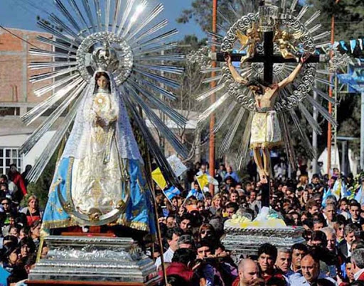
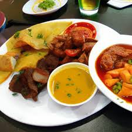
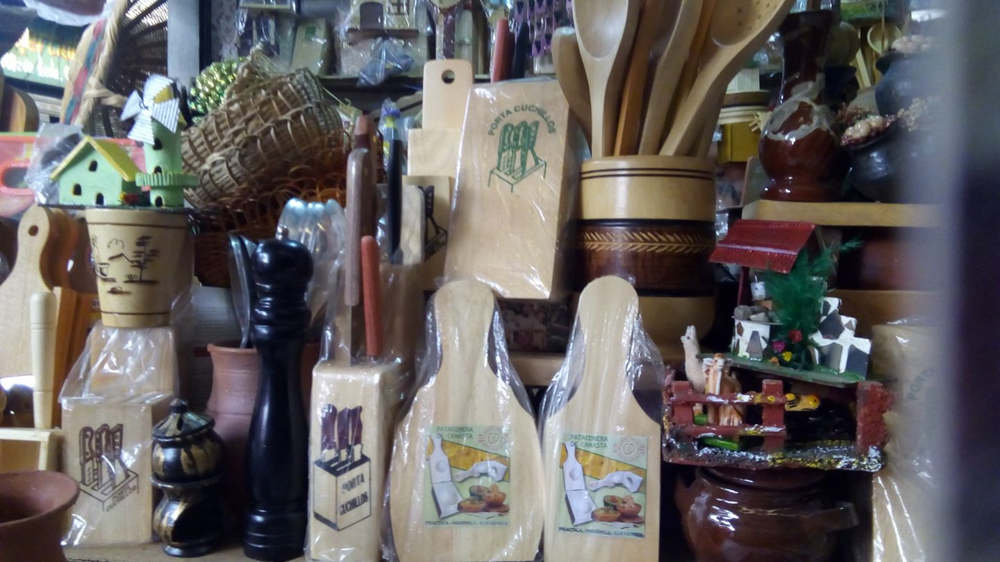
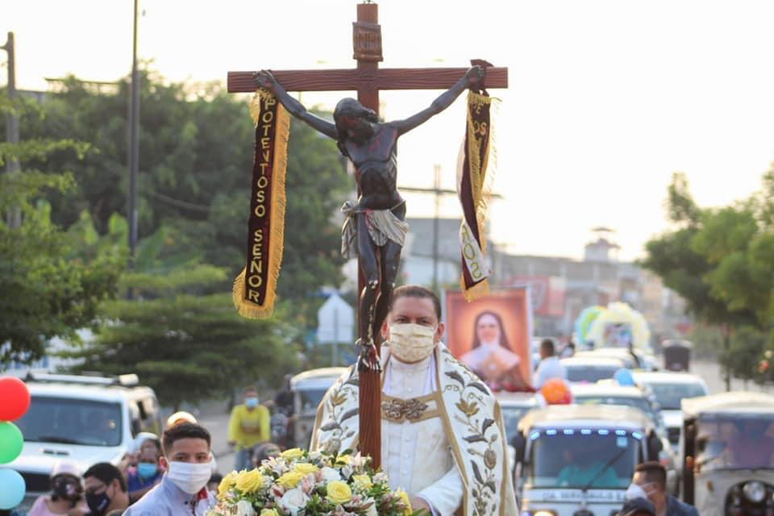
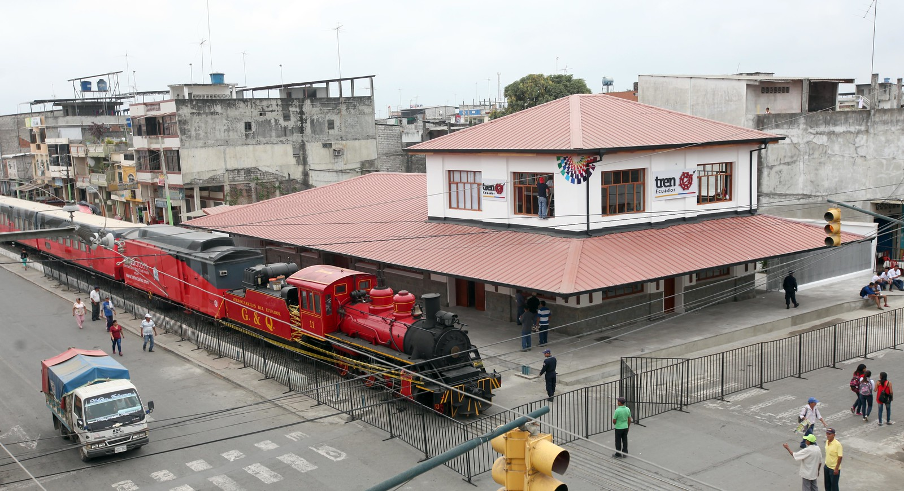

Las festividades religiosas son importantes en Milagro, especialmente las celebraciones en honor a su patrón, que suelen incluir procesiones, misas y eventos culturales. Estas festividades suelen combinar elementos católicos con tradiciones locales.
La comida es una parte integral de las costumbres locales. Platos típicos como el arroz con menestra y carne, el encebollado, el ceviche, entre otros, son parte de la identidad culinaria de la región. Compartir comidas y celebrar con familia y amigos es una costumbre importante.
Aunque la ciudad de Milagro es más conocida por su agricultura, las artesanías locales también son valoradas. Productos como tejidos, cerámicas y productos de cuero pueden encontrarse en mercados locales y son apreciados por su artesanía tradicional.
La fe y la religión tienen una influencia significativa en las costumbres de Milagro. Las prácticas religiosas, como la asistencia a misa los domingos y participar en procesiones durante Semana Santa, son comunes entre los residentes.
Los habitantes de Milagro suelen ser conocidos por su hospitalidad y calidez hacia los visitantes. Invitar a amigos y familiares a sus hogares y compartir comida y bebida es una costumbre arraigada en la cultura local.
Las costumbres en Milagro, al igual que en muchas otras ciudades de Ecuador, reflejan una mezcla de tradiciones indígenas, influencias coloniales y elementos contemporáneos. Aquí hay algunas costumbres y tradiciones que son significativas en la ciudad de Milagro y sus alrededores,Estas costumbres y tradiciones no solo enriquecen la vida cotidiana de los habitantes de Milagro, sino que también reflejan la rica historia y diversidad cultural de Ecuador en su conjunto.
Avance para más